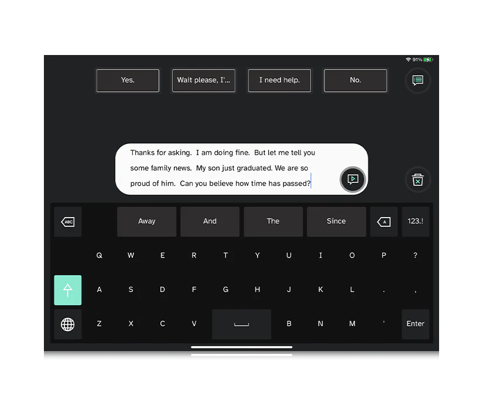

Research Process Research
Related Project Review
The main component of this project is the output of emotional audio. This is very similar to existing applications such as WavelAI and TypecastAI since both are designed to generate emotional audio from text input. As both the products are business solutions with a monthly service fee, the emotional audio output service are all private. Hence, the main difference between these products and our project is that our project is implemented with only open-sourced models and libraries. This significant difference allows us to achieve one of the main goals of our project, which is to provide this service to MND patients without any financial barriers.
Tobii Dynavox is a company specialising in asistive technology for communication such as communication apps, speech-generating devices and eye trackers for people with disabilities. It is similar to our project since it also has developed devices that can generate speech
One of their applications is TD Talk [1], which supports speech generation for literate adults with communication disabilities using eyes or fingers. The application offers a wide selection of languages and voices, predictive sentence construction, easy editing, and the Partner Window for showing typed text. 
Another one of their applications is Communicator 5 [2], which allows for text-to-speech conversion using eyes, fingers, or a switch, with added functionalities for internet access and environmental control.
From existing applications, we can learn the importance:
- User Interface: The UI must be tailored to the specific needs of the users, especially considering the physical limitations of individuals with conditions like MND. The ability to use eye-tracking for communication is particularly valuable. Although our current project does not include any eye-tracking, a future improvement of the UI could be achieved through collaboration with eye-tracking MotionInput teams
- Accessibility: Accessibility features are crucial for inclusivity, ensuring that individuals with varying degrees of motor abilities can use the application effectively. The main target of our project is MND patients but it would be extremely impactful if it could be utilised for other speech impairment diseases.
- Integration: The software's ability to integrate with various input methods and platforms (like the internet, social media, and home control systems) showcases the importance of a flexible and extensible system.
Technology Review
After creating the MoSCow list and identifying the main aims of the project, we researched technologies that we could implement to help us achieve our goals.
Our project's main aim is to infuse spoken audio generated from text with emotion on a reasonable time scale. This involves building on existing TTS models, as training such a model from scratch would require immense amounts of data and computing resources. There are various methods available to achieve this task, and some of them are described below.
- Fine-tuning: Fine-tuning is a process that makes use of a pre-trained model's more general capabilities and tunes its responses in a specific context that matches our needs. This method is useful as it requires less computational power, training data as well as time required for training. This makes the method a viable option for our project on the given time scale.
- Audio Presets: Existing open source TTS models often allow the use of voice presets that can make changes to voice, pitch and prosody levels in the default model output. These metrics are key to affecting emotion in speech, and thus can be leveraged by configuring voice presets for each emotion during development.
- Re-training: Re-training existing TTS models with modifications to the model architecture allows the incorporation of pitch and prosodic changes that weren't originally possible. For our project, this would mean introducing speaker embeddings and emotion IDs to a corpus of audio data transcribed and labelled with the corresponding emotion. However, this method requires access to significantly powerful hardware and unrealistic time scales in this context.
- Prompt Conditioning: Prompt conditioning involves making use of prompts visible to the model during text processing and audio generation that allow dynamic control over natural speech patterns, like pauses. Depending on the specific model capabilities due to the data available to train it on, this can range from introducing convincing human laughter to potentially attuning the audio to a specific emotion with curated prompts.
| Method | Explanation |
|---|---|
| Fine-tuning | While this method significantly decreases the time required to obtain a model that achieves one's desired goal, the amount of highly specific data required to implement this method effectively remains a barrier. |
| Audio presets | This method, although restrictive in the range of emotion available to synthesise, allows custom audio generation with a lower time period required to process text and generate input. |
| Re-training | This method allows the most control over the structure of the model and the output produced. However, not only does it require a large amount of data in order to achieve a usable standard, it also takes much more time than the other methods described. Due to the nature of our project's timeline, this method is less feasible than others. |
| Prompt-conditioning | While flexible, one potential drawback is that prompt processing generally takes up more compute power, as well as an increased amount of time between input and output. |
Programming Language
For machine learning, Python is one of the best programming languages to use due to its rich ecosystem of advanced libraries and frameworks such as TensorFlow, PyTorch and scikit-learn. These provide comprehensive tools for building and deploying ML models efficiently. Additionally, due to its ML capacities, many sentiment analysis and emotional audio generation models are in Python.
While Python itself may not be as fast as lower-level languages like C or C++, its performance can be enhanced through the use of optimised libraries and techniques. Additionally, Python interfaces seamlessly with high-performance computing libraries and frameworks, enabling scalable machine learning solutions.
GUI and frontend
We will create an intuitive user interface that allows the users to easily select the text and emotions. Due to deciding to use Python for machine learning purposes, it is appropriate to use Python for the GUI as well.
For our GUI, we considered many different toolkits that can suit our requirement of creating a simple and easy-to-use GUI for MND patients to generate emotional audio. Some common Python libraries are PyQt and Tkinter. Despite both having lots of benefits such as Tkinter being easy to use and able to run on any platform that supports Python, and PyQt being highly customisable, we decided to use Streamlit.
The main reason is that Streamlit provides an easy way to handle user input and interactivity without the need for a complex event-handling system, which is vital to reducing the complexity of our system’s text input and audio playback functionality. Additionally, it has seamless integration with Python data science libraries, which would be useful for further developments
| GUI | Advantages |
|---|---|
| Tkinter | Easy to use and runs on any platform that has Python installed since it is included with Python by default (no need for additional libraries or dependencies). |
| PyQt | Rich GUI features and has board cross-platform compatibility between different OS . |
| Streamlit | Applications can be easily deployed and shared online, allowing for easy accessibility. Streamlit applications are also highly customisable and can be integrated with Python data science libraries. |
| GUI | Disadvantages |
|---|---|
| Tkinter | Dull and outdated appearance compared to more modern GUIs. Furthermore, it has limited customisations of widgets without extensive coding. |
| PyQt | It has a complex API. Additionally, PyQt applications can be quite large after packaging for deployment because they include the large Qt libraries. |
| Streamlit | Web only since it is designed for deploying web applications. |
Sentiment Analysis
There are many open-sourced sentiment analysis models available online. We have researched and utilised different sentiment analysis models that enable us to very accurately analyse the emotion of text. We have listed them below, combined with their advantages and disadvantages
BERT and DistilBERT [3,4]
- Bidirectional Context: BERT's bidirectional architecture allows it to capture contextual information from both left and right contexts, enabling a deeper understanding of language semantics and syntax.
- Transfer Learning: BERT's pre-trained representations can be fine-tuned on specific downstream tasks with relatively small amounts of task-specific data, making it highly adaptable and versatile.
- Limited Emotions: Does not include disgust and neutral emotion. Also it is not very accurate for the surprise emotion through many experimentations.
VADER
- Pre-Trained for Sentiment Analysis: VADER is specifically designed for sentiment analysis, making it easy to implement for tasks such as sentiment classification and polarity detection.
- Fast and Lightweight: VADER is relatively lightweight and executes quickly, making it suitable for real-time sentiment analysis applications.
- Rule-Based: VADER uses a lexicon and rule-based approach, which can be advantageous for certain types of sentiment analysis tasks, especially when dealing with social media or informal text.
- Limited Context Understanding: VADER's rule-based approach may struggle with understanding complex language nuances and sarcasm, leading to less accurate sentiment predictions in some cases.
DistilRoBERTa [5,6]
- High Performance:DistilRoBERTa is based on the RoBERTa architecture, which is known for its strong performance across various natural language processing (NLP) tasks, including sentiment analysis, text classification, and more.
- Efficient: DistilRoBERTa is a distilled version of RoBERTa, meaning it retains much of the original model's performance while being more resource-efficient in terms of memory and computation.
- Resource Intensive: While more efficient than the full-sized RoBERTa model, DistilRoBERTa still requires significant computational resources, especially during fine-tuning or inference on large datasets. Also it is not very accurate for the surprise emotion through many experimentations.
Each sentiment analysis model has its own advantages and disadvantages. Hence, we will implement an algorithm that will analyse the results from each model and conclude on a single emotion, considering all edge cases and scores.
Emotional Audio Generation
Possible Technology: Emotivoice [7]
The TTS model EmotiVoice is a model that offers the capabilities required for our main goals. As a prompt-controlled TTS engine, it allows a degree of flexibility in the audio produced by the model, such as emphasis of tone or subtle pauses.
Crucially, it takes one of six emotions (Calm, Happy, Angry, Fearful, Surprised, Disgusted) along with the phonemes that correspond to the text input in order to render the audio as required. The model architecture is based on the PromptTTS research paper by Microsoft, which describes the ability to make use of embedded prompts in the input text to influence prosody in a more dynamic way.
For our project, not only can we make use of the EmotiVoice TTS engine, we can also take inspiration from its basis rooted in prompt-controlled audio generation in order to produce convincing emotional audio.
Our Technology: VALL-E-X [8]
Comparison between different libraries
Summary of Our Technical Decisions
| Technical Problem | Our Decision |
|---|---|
| Programming Language (front and back end) | Python 3 |
| Sentiment Analysis | BERT, VADER and DistilRoBERTa models |
| GUI | Streamlit |
| Emotional Audio Generation | Vall-E-X |
References
- TD Talk. [Online]. Available: https://uk.tobiidynavox.com/products/td-talk?tab=1
- Communicator 5. [Online]. Available: https://uk.tobiidynavox.com/pages/communicator-5
- Savani, B. (2022). DistilBERT. [Online]. Available: https://huggingface.co/bhadresh-savani/distilbert-base-uncased-emotion
- NLPTown. (2022). BERT. [Online]. Available: https://huggingface.co/nlptown/bert-base-multilingual-uncased-sentiment
- Hartmann, J. (2024). DistilRoBERTa. [Online]. Available: https://huggingface.co/j-hartmann/emotion-english-distilroberta-base
- Jieli, M. (2022). DistilRoBERTa. [Online]. Available https://huggingface.co/michellejieli/emotion_text_classifier
- netease-youdao. (2022). EmotiVoice. [Online]. Available: https://github.com/netease-youdao/EmotiVoice
- Plachtaa. (2020). VALL-E-X. [Online]. Available: https://github.com/Plachtaa/VALL-E-X